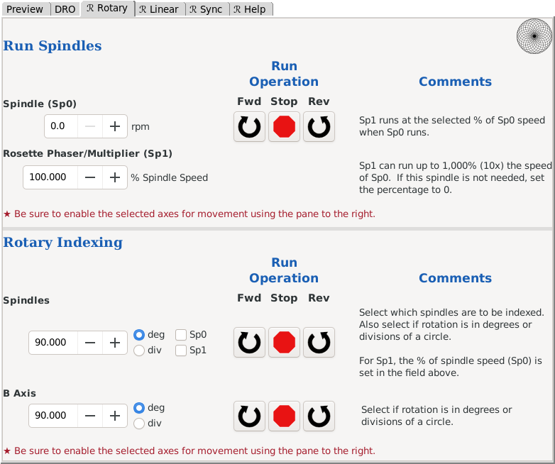

Run Spindles
The top half of this menu screen is used to run the spindles:
- Main spindle - Sp0
- Rosette Phaser/Multiplier - Sp1
Rotary Indexing
The bottom half of this menu screen is used to index any rotary axes:
- Main spindle - Sp0
- Rosette phaser/multiplier - Sp1
- B axis